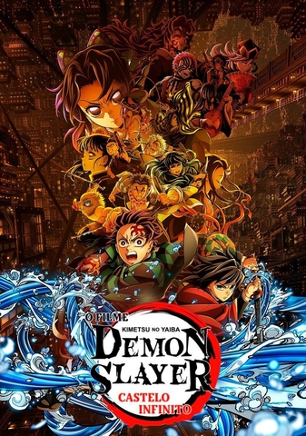

-
Demon Slayer

Conta a história de Tanjiro Kamado, um garoto que tem sua família massacrada por um demônio. A única sobrevivente, sua irmã mais nova (Nezuko), é transformada em uma dessas criaturas. Determinado a curá-la e vingar sua família, Tanjiro junta-se à Corporação de Caçadores de Demônios. Saiba mais
-
Jujutsu Kaisen

Yuji Itadori, um estudante que engole um dedo amaldiçoado para salvar seus amigos. Ele se torna hospedeiro de Ryomen Sukuna, o Rei das Maldições. Para evitar sua própria execução imediata, Itadori entra no mundo dos feiticeiros e parte em uma missão para consumir todos os dedos de Sukuna e destruí-lo de vez. Saiba mais
-
Solo Leveling

É uma história de fantasia e ação passada em um mundo onde portais para masmorras cheias de monstros surgiram. O protagonista é Sung Jinwoo, o caçador mais fraco do mundo. Após uma tragédia, ele ganha um "Sistema" que lhe permite subir de nível sozinho e se tornar o mais forte. Saiba mais
-
Black Clover

Black Clover acompanha Asta e Yuno, dois órfãos abandonados na mesma igreja. Em um mundo onde a magia é tudo, Asta nasceu sem poder algum, enquanto Yuno possui um talento mágico excepcional. Unidos por uma rivalidade e uma promessa, eles competem para se tornar o Rei Mago. Saiba mais
-
Naruto

Naruto é uma famosa franquia de mangá e anime que narra a história de Naruto Uzumaki, um jovem órfão e ninja rejeitado por sua vila. O enredo principal acompanha sua jornada de amadurecimento, enquanto ele treina para dominar suas habilidades e luta para conquistar o respeito de todos, com o grande sonho de se tornar o Hokage (o líder e protetor máximo de sua comunidade) Saiba mais